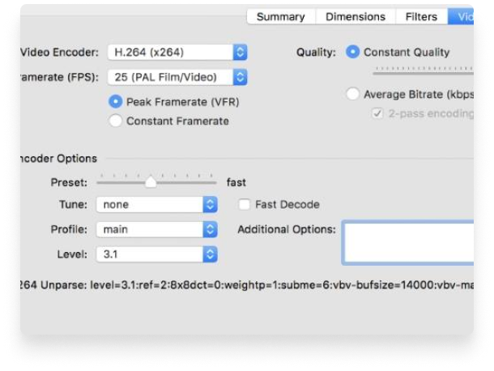

HandBrake
Docs
GitHub
News
Community & Support
Downloads
Handbrake
The open source video transcoder
HandBrake is a tool for converting video from nearly any format to a selection of modern, widely supported codecs
Download for Free
Convert video from nearly any format
Free and Open Source video converter
Multi-Platform desktop application
Just a few reason you will love HandBrake
Optimised for easy use
Built-in Device Presets
Get started with HandBrake in seconds by choosing a profile optimised for your device, or choose a universal profile for standard or high quality conversions. Simple, easy, fast. For those that want more choice, tweak many basic and advanced options to improve your encodes.
Modern video formats
Supported Input Sources
Handbrake can process most common multimedia files and any DVD or BluRay sources that do not contain any kind of copy protection.
Outputs

File Containers: .MP4(.M4V) and .MKV
Video Encoders: H.265 (x265 and QuickSync), H.264(x264 and QuickSync), H.265 MPEG-4 and MPEG-2, VP8, VP9 and Theora
Audio Encoders: AAC / HE-AAC, MP3, Flac, AC3, or Vorbis
Audio Pass-thru: AC-3, E-AC3, DTS, DTS-HD, TrueHD, AAC and MP3 tracks
With you in mind
Even more features for you
Title / chapter and range selection
Batch Scan and Queueing of encodes
Copyright 2020 ©
The HandBrake Team |
Privacy Policy
Found a bug?
Talk to us